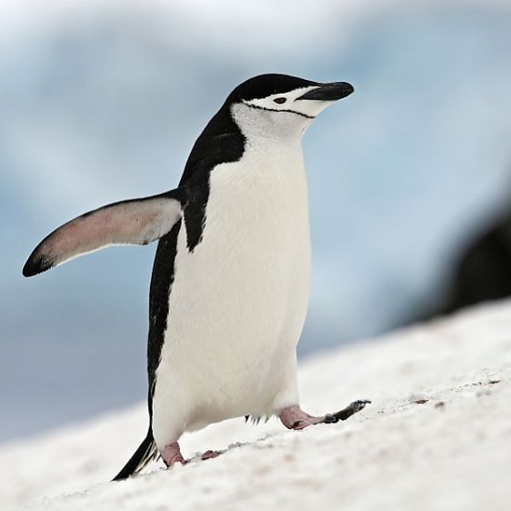

This page gives information on all 18 different species of penguin.
Penguins can be found on 4 different continents. Click on the
continent below for information on what penguins can be found there.
Penguin Information
Number of Penguin Species: 18
Adelie PenguinContinent(s): AntarcticaBinomial Name: Pygoscelis AdeliaeAverage Height: 70cmAverage Lifespan: 11 to 20 yearsConservation Status: Least ConcernKey Feature: White ring surrounding the eyeFun Fact: Were given their name in 1840. The French Antarctic explorer Jules Dumont d'Urville named them after his wife, AdéleAfrican PenguinContinent(s): AfricaBinomial Name: Spheniscus DemersusAverage Height: 60-70cmAverage Lifespan: 10 to 27 yearsConservation Status: EndangeredKey Feature: Pink patch of skin above the eyes and a black face maskFun Fact: An alternative name for them is 'Jackass Penguin' due to the loud, donkey-like noise they makeChinstrap Penguin

Continent(s): Antarctica, South AmericaBinomial Name: Pygoscelis AntarcticusAverage Height: 68 to 76cmAverage Lifespan: 15 to 20 yearsConservation Status: Least ConcernKey Feature: Black head and line running under mouth, giving the look of a helmet and chinstrapFun Fact: They are believed to be the most abundant penguin in the Antarctic. However, the number of Chinstrap Penguins in Antarctica has still fallen by 77% in the last 50 yearsEmperor PenguinContinent(s): AntarcticaBinomial Name: Aptenodytes ForsteriAverage Height: 120cmAverage Lifespan: 20 yearsConservation Status: Near ThreatenedKey Feature: Tall stature with yellow accents around head and chest. Yellow cheek patchFun Fact: Are the tallest species of penguin and are believed to be the sixth largest bird in generalErect-Crested PenguinContinent(s): Australia and OceaniaBinomial Name: Eudyptes SclateriAverage Height: 65 to 70cmAverage Lifespan: 12 yearsConservation Status: EndangeredKey Feature: A broad, yellow eyebrow stripe forms its erect-crestFun Fact: The binomial name commemorates British zoologist Philip Lutley SclaterFiordland PenguinContinent(s): Australia and OceaniaBinomial Name: Eudyptes PachyrhynchusAverage Height: 60cmAverage Lifespan: 10 to 15 yearsConservation Status: Near ThreatenedKey Feature: Yellow-crested. Can be distinguished from the Erect-Crested and Snares penguin as it has no bare skin around the base of its billFun Fact: They will spend up to 75% of their lives in the ocean during the winterGalapagos PenguinContinent(s): South AmericaBinomial Name: Spheniscus MendiculusAverage Height: 50cmAverage Lifespan: 12 to 15 yearsConservation Status: EndangeredKey Feature: Black head with a white border running from behind the eyeFun Fact: The only penguin species which naturally ventures into the northern hemisphereGentoo PenguinContinent(s): AntarcticaBinomial Name: Pygoscelis PapuaAverage Height: 51 to 90cmAverage Lifespan: 12 to 15 yearsConservation Status: Least ConcernKey Feature: Large white splodge above the eye. This distinguishing feature makes it look like someone has thrown a snowball at themFun Fact: Are the fastest swimming of the penguin species, reaching speeds of up to 36km per hourHumboldt PenguinContinent(s): South AmericaBinomial Name: Spheniscus HumboldtiAverage Height: 56 to 70cmAverage Lifespan: 12 to 15 yearsConservation Status: VulnerableKey Feature: Black head with a white border that runs from behind the eye forming a black maskFun Fact: They get their name from the cold sea current that runs along the west coast of South America from Chile to Peru. ZSL London Zoo houses a colony of Humboldt PenguinsKing PenguinContinent(s): Antarctica, South AmericaBinomial Name: Aptenodytes PatagonicusAverage Height: 70 to 100cmAverage Lifespan: 13 to 15 yearsConservation Status: Least ConcernKey Feature: Orange/yellow markings around the head and chest. Orange cheek patchFun Fact: Some early explorers thought that King Penguin chicks were a separate species of penguin because of their vastly different appearance, being brown and fluffyLittle PenguinContinent(s): Australia and OceaniaBinomial Name: Eudyptula MinorAverage Height: 30cmAverage Lifespan: 6 to 10 yearsConservation Status: Least ConcernKey Feature: Small stature and blue/grey feathersFun Fact: Also known as Fairy Penguins or Blue Penguins. They are, unsurprisingly, the smallest species of penguinMacaroni PenguinContinent(s): Antarctica, South AmericaBinomial Name: Eudyptes ChrysolophusAverage Height: 70cmAverage Lifespan: 12 yearsConservation Status: VulnerableKey Feature: Yellow crested with a skin patch at base of beak, underneath the eyeFun Fact: Named for their yellow crests, which resembled the feathers called 'macaronis' seen on the hats worn by young fashionable men in the 18th centuryMagellanic PenguinContinent(s): South AmericaBinomial Name: Spheniscus MagellanicusAverage Height: 65 to 76cmAverage Lifespan: 15 to 20 yearsConservation Status: Least ConcernKey Feature: Two black bands between the head and the breast. Black face maskFun Fact: Named after Portuguese explorer Ferdinand Magellan who first reported seeing these penguins in 1520Northern-Rockhopper PenguinContinent(s): South AmericaBinomial Name: Eudyptes MoseleyiAverage Height: 52 to 55cmAverage Lifespan: 9 to 12 yearsConservation Status: EndangeredKey Feature: Exceptionally long yellow plumes on head, longer than the Southern-RockhopperFun Fact: 99% of Northern-Rockhoppers breed on Tristan da Cunha and Gough Island in the south Atlantic Ocean, halfway between the continents of Africa and South AmericaRoyal PenguinContinent(s): Australia and OceaniaBinomial Name: Eudyptes SchlegeliAverage Height: 65 to 76cmAverage Lifespan: 15 to 20 yearsConservation Status: Near ThreatenedKey Feature: Yellow crested. Royal penguins look similar to Macaroni penguins but with white faces and chinsFun Fact: Was once considered a subspecies of the Macaroni PenguinSnares PenguinContinent(s): Australia and OceaniaBinomial Name: Eudyptes RobustusAverage Height: 50 to 70cmAverage Lifespan: 12 to 20 yearsConservation Status: VulnerableKey Feature: Yellow crested and often compared to the Fiordland Penguin. Can be distinguished from the Fiordland by its patch of skin at the base of their beakFun Fact: Named after the place in which it breeds — the Snares Islands, off the coast of New ZealandSouthern-Rockhopper PenguinContinent(s): Australia and Oceania, South AmericaBinomial Name: Eudyptes ChrysocomeAverage Height: 45 to 58cmAverage Lifespan: 11.5 yearsConservation Status: VulnerableKey Feature: Large yellow plumes on head, but not as large as the Northern-RockhopperFun Fact: In Greek Eudyptes means 'good diver' and Chrysocome means 'golden hair'Yellow-Eyed PenguinContinent(s): Australia and OceaniaBinomial Name: Megadyptes AntipodesAverage Height: 62 to 79cmAverage Lifespan: 12 to 20 yearsConservation Status: EndangeredKey Feature: Band of pale yellow feathers surrounding its eyes and encircling the back of its head, giving it its nameFun Fact: It is believed that Yellow-Eyed Penguins may very well be the most ancient of all existing penguin species. The Yellow-Eyed Penguin features on the New Zealand five dollar bill
Information Sources
The information on this page, in addition to facts and information I have picked up over the years myself, came in part from these online resources: